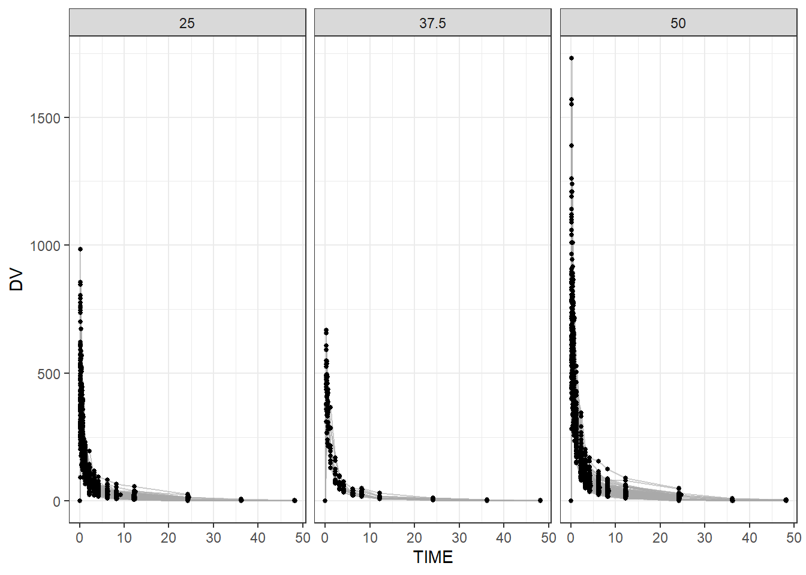
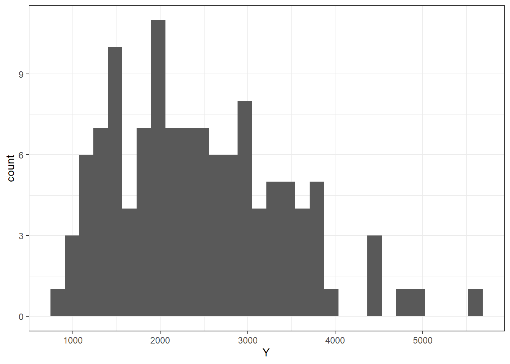
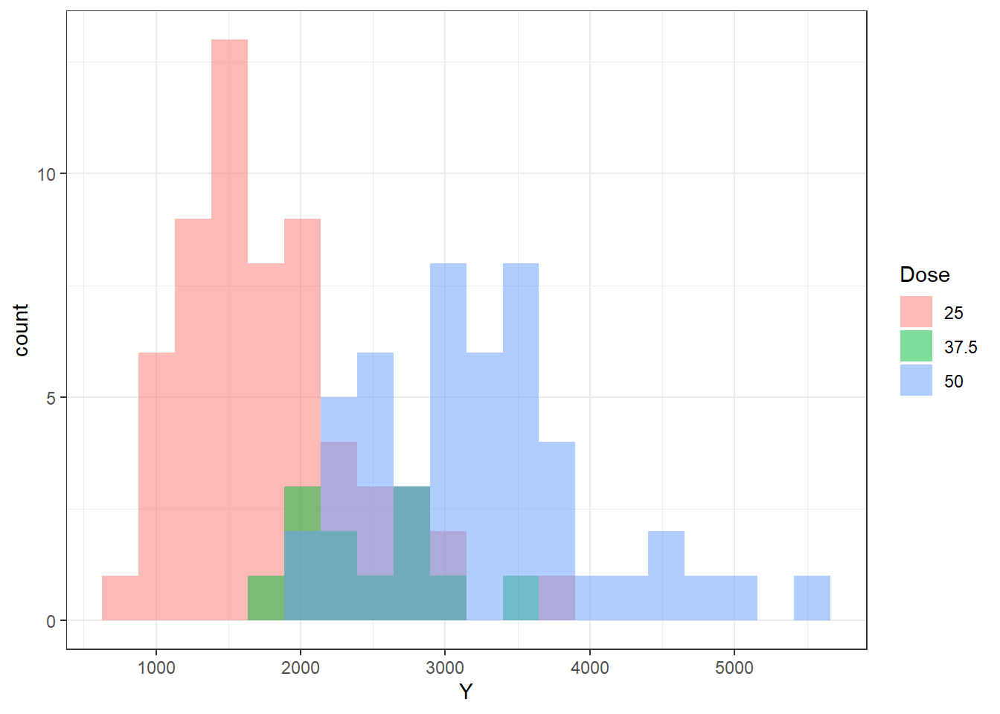
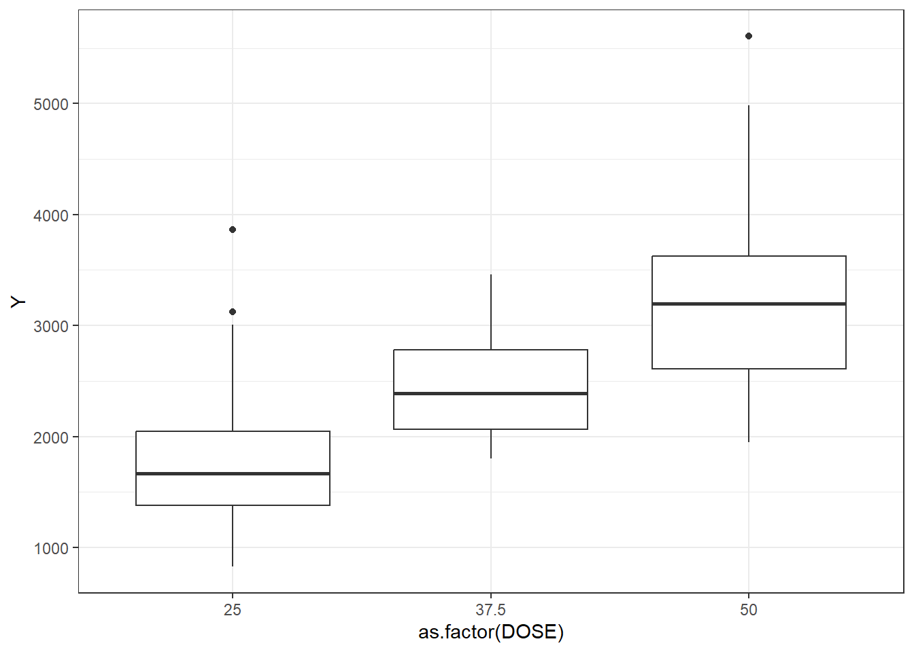
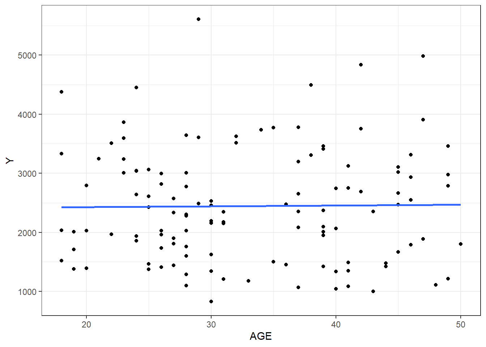
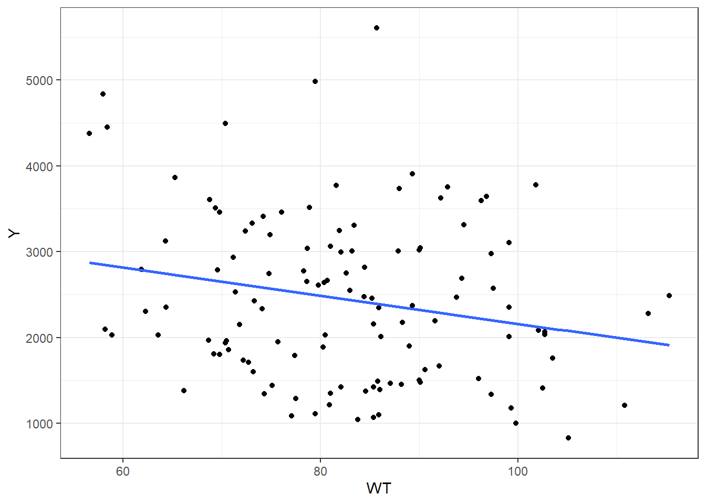
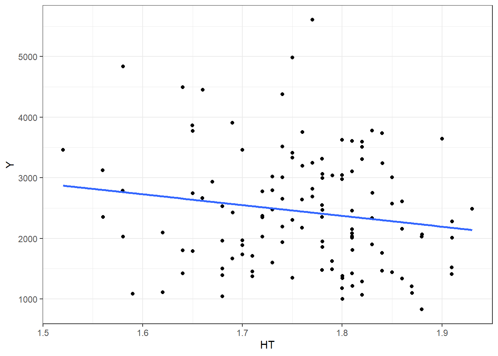

#write code to make a plot that shows a line for each individual, with DV on the y-axis and time on the x-axis. Stratify by dose (e.g., use a different color for each dose, or facets).ggplot(data, aes(x=TIME, y=DV, group=ID))+geom_line(alpha=0.6, color="darkgrey")+geom_point(size=1, color="black")+theme_bw()+facet_wrap(~ DOSE)

#Write code that keeps only observations with OCC = 1.data2 <- data %>%filter(OCC==1) #only keep OCC=1#Write code to exclude the observations with TIME = 0, then compute the sum of the DV variable for each individual using dplyr::summarize(). Call this variable Y. The result from this step should be a data frame/tibble of size 120 x 2, one column for the ID one for the variable Y. Next, create a data frame that contains only the observations where TIME == 0. This should be a tibble of size 120 x 17. Finally, use the appropriate join function to combine those two data frames, to get a data frame of size 120 x 18.data3 <- data2 %>%filter(TIME!=0) #excluding TIME=0sumDV <- data3 %>%group_by(ID) %>%summarize(Y =sum(DV), .groups ="drop") #DV sum of each individualtime0 <- data2 %>%filter(TIME==0) #only observations with time=0data4 <-left_join(time0, sumDV, by ="ID") #join sumDV and time0data5 <- data4 %>%mutate(RACE =factor(RACE),SEX =factor(SEX) ) %>%select(Y, DOSE, AGE, SEX, RACE, WT, HT) #convert SEX and RACE to factors; keep certain variables
Additional EDA
summary(data5)
Y DOSE AGE SEX RACE
Min. : 826.4 Min. :25.00 Min. :18.00 1:104 1 :74
1st Qu.:1700.5 1st Qu.:25.00 1st Qu.:26.00 2: 16 2 :36
Median :2349.1 Median :37.50 Median :31.00 7 : 2
Mean :2445.4 Mean :36.46 Mean :33.00 88: 8
3rd Qu.:3050.2 3rd Qu.:50.00 3rd Qu.:40.25
Max. :5606.6 Max. :50.00 Max. :50.00
WT HT
Min. : 56.60 Min. :1.520
1st Qu.: 73.17 1st Qu.:1.700
Median : 82.10 Median :1.770
Mean : 82.55 Mean :1.759
3rd Qu.: 90.10 3rd Qu.:1.813
Max. :115.30 Max. :1.930
data5 %>%group_by(SEX) %>%summarize(n =n(),mean_Y =mean(Y),sd_Y =sd(Y) ) #summary table by SEX
# A tibble: 2 × 4
SEX n mean_Y sd_Y
<fct> <int> <dbl> <dbl>
1 1 104 2478. 959.
2 2 16 2236. 983.
#Mean Y is slightly higher on average in SEX=1 compared to SEX=2, but variability is similar and SEX=2 is a drastically smaller sample sizedata5 %>%group_by(RACE) %>%summarize(n =n(),mean_Y =mean(Y),sd_Y =sd(Y) ) #summary table by RACE
#Mean Y varies across RACE, but comparisons are difficult with RACE=7 and RACE=88 having drastically smaller sample sizes than RACE=1 and RACE=2#distribution of Yggplot(data5, aes(x = Y)) +geom_histogram(bins =30) +theme_bw()

#Y appears slightly skewed. Should check based on DOSE#distribution of Y (based on DOSE)ggplot(data5, aes(x = Y, fill =as.factor(DOSE))) +geom_histogram(alpha =0.5, position ="identity", bins =20) +theme_bw() +labs(fill ="Dose")

#Some overlap but histograms show Y increases with DOSE#categorical predictor: DOSEggplot(data5, aes(x =as.factor(DOSE), y = Y)) +geom_boxplot() +theme_bw()

#boxplots support Y increasing by DOSE#distribution of HTggplot(data5, aes(x = HT)) +geom_histogram(bins =30) +theme_bw()
#WT relatively normal#plot AGE VS Yggplot(data5, aes(x = AGE, y = Y)) +geom_point() +geom_smooth(method ="lm", se =FALSE) +theme_bw()
`geom_smooth()` using formula = 'y ~ x'

#Little to no relationship between AGE and Y#plot WT VS Yggplot(data5, aes(x = WT, y = Y)) +geom_point() +geom_smooth(method ="lm", se =FALSE) +theme_bw()
`geom_smooth()` using formula = 'y ~ x'

#Some negative association between WT and Y#plot HT VS Yggplot(data5, aes(x = HT, y = Y)) +geom_point() +geom_smooth(method ="lm", se =FALSE) +theme_bw()
`geom_smooth()` using formula = 'y ~ x'

#Some negative association between HT and Y#correlation matrixcor <- data5 %>%select(Y, DOSE, AGE, WT, HT) %>%cor()cor
Y DOSE AGE WT HT
Y 1.00000000 0.71808396 0.01256372 -0.2128719 -0.15832972
DOSE 0.71808396 1.00000000 0.07201600 0.1012319 0.01877994
AGE 0.01256372 0.07201600 1.00000000 0.1196740 -0.35185806
WT -0.21287194 0.10123185 0.11967399 1.0000000 0.59975050
HT -0.15832972 0.01877994 -0.35185806 0.5997505 1.00000000
#Y is strongly positively correlated with DOSE, weakly negatively with HT and WT. HT and WT are moderately correlated with each other.
Model Fitting
set.seed(123) #for reproducibilitylm_mod <-linear_reg()#Fit a linear model to Y using DOSElm_fit1 <- lm_mod %>%fit(Y ~ DOSE, data = data5)lm_fit1
parsnip model object
Call:
stats::lm(formula = Y ~ DOSE, data = data)
Coefficients:
(Intercept) DOSE
323.06 58.21
#Y roughly increases by 58 units for each 1 unit of DOSE#Fit a linear model to Y using all predictorslm_fit2 <- lm_mod %>%fit(Y ~ ., data = data5)lm_fit2
parsnip model object
Call:
stats::lm(formula = Y ~ ., data = data)
Coefficients:
(Intercept) DOSE AGE SEX2 RACE2 RACE7
3386.863 59.935 3.155 -357.734 155.034 -405.320
RACE88 WT HT
-53.505 -23.047 -748.487
#Compute RMSE and R-squared for both modelspreds1 <-predict(lm_fit1, new_data = data5) %>%bind_cols(data5 %>%select(Y))rmse(preds1, truth = Y, estimate = .pred)
# A tibble: 1 × 3
.metric .estimator .estimate
<chr> <chr> <dbl>
1 rmse standard 666.
rsq(preds1, truth = Y, estimate = .pred)
# A tibble: 1 × 3
.metric .estimator .estimate
<chr> <chr> <dbl>
1 rsq standard 0.516
#For the first model (Y ~ DOSE), RMSE is 666 and rsq is 0.52preds2 <-predict(lm_fit2, new_data = data5) %>%bind_cols(data5 %>%select(Y))rmse(preds2, truth = Y, estimate = .pred)
# A tibble: 1 × 3
.metric .estimator .estimate
<chr> <chr> <dbl>
1 rmse standard 591.
rsq(preds2, truth = Y, estimate = .pred)
# A tibble: 1 × 3
.metric .estimator .estimate
<chr> <chr> <dbl>
1 rsq standard 0.619
#For the second model (Y ~ .), RMSE is 591 and rsq is 0.62log_mod <-logistic_reg() %>%set_engine("glm")#Fit a log model to Y using SEXlog_fit1 <- log_mod %>%fit(SEX ~ DOSE, data = data5)log_fit1
parsnip model object
Call: stats::glm(formula = SEX ~ DOSE, family = stats::binomial, data = data)
Coefficients:
(Intercept) DOSE
-0.76482 -0.03175
Degrees of Freedom: 119 Total (i.e. Null); 118 Residual
Null Deviance: 94.24
Residual Deviance: 92.43 AIC: 96.43
#Fit a log model to Y using all predictorslog_fit2 <- log_mod %>%fit(SEX ~ DOSE + AGE + RACE + WT + HT, data = data5)log_fit2
parsnip model object
Call: stats::glm(formula = SEX ~ DOSE + AGE + RACE + WT + HT, family = stats::binomial,
data = data)
Coefficients:
(Intercept) DOSE AGE RACE2 RACE7 RACE88
59.70763 -0.10076 0.07967 -2.08849 0.61396 -1.16919
WT HT
-0.01409 -35.03549
Degrees of Freedom: 119 Total (i.e. Null); 112 Residual
Null Deviance: 94.24
Residual Deviance: 33.37 AIC: 49.37
#Compute accuracy and ROC-AUC for both modelspred_class1 <-predict(log_fit1, new_data = data5, type ="class")pred_prob1 <-predict(log_fit1, new_data = data5, type ="prob")results1 <-bind_cols(data5 %>%select(SEX), pred_class1, pred_prob1)accuracy(results1, truth = SEX, estimate = .pred_class)
#For the first log model (SEX ~ DOSE), accuracy is 0.867 and ROC AUC is 0.41pred_class2 <-predict(log_fit2, new_data = data5, type ="class")pred_prob2 <-predict(log_fit2, new_data = data5, type ="prob")results2 <-bind_cols(data5 %>%select(SEX), pred_class2, pred_prob2)accuracy(results2, truth = SEX, estimate = .pred_class)